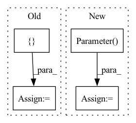

Pattern ID :21085
Before Change
self.kernel_size = kernel_size
self.dilations = []
sections = []
conv1d = []
if type(in_channels) is int:
assert groups is not None, "Specify groups"After Change
weights = torch.cat(weights, dim=1)
biases = torch.cat(biases, dim=0)
self.weights = nn.Parameter(weights)
self.biases = nn.Parameter( biases)
def forward(self, input):
kernel_size = self.kernel_size
In pattern: SUPERPATTERN
Frequency: 3
Non-data size: 4
Instances Fragment ID: 67743224
Project Name: tky823/dnn-based_source_separation
Commit Name: fec10f8ff00e8a22df428cf8cfce27d1029d3b4c
Time: 2021-03-12
Author: 40362510+tky823@users.noreply.github.com
File Name: src/conv.py
M Class Name: MultiDilatedConv1d
N Class Name: MultiDilatedConv1d
M Method Name: __init__(5)
N Method Name: __init__(5)
M Parent Class: nn.Module
N Parent Class: nn.Module
M File Name: src/conv.py
N File Name: src/conv.py
M Start Line: 153
M End Line: 179
N Start Line: 153
N End Line: 184
Before Change
self.tree_indices = torch.nn.Parameter(torch.from_numpy(tree_indices), requires_grad=False)
self.nodes = []
self.biases = []
for i in range(1, max_depth):
nodes = torch.nn.Parameter(
torch.from_numpy(weight_0[:, list(sorted(node_by_levels[i]))].flatten().astype("int64")), requires_grad=False
)After Change
self.threshold_vals = torch.nn.ParameterList(self.threshold_vals)
self.missing_node_ids = torch.nn.ParameterList(self.missing_node_ids)
self.leaf_nodes = torch.nn.Parameter(
torch.from_numpy(leaf_vals.reshape((-1, self.n_classes)).astype("float32")), requires_grad=False
)
// We register also base_prediction here so that tensor will be moved to the proper hardware with the model.
// i.e., if cuda is selected, the parameter will be automatically moved on the GPU.
if constants.BASE_PREDICTION in extra_config: Fragment ID: 67743227
Project Name: microsoft/hummingbird
Commit Name: 108c2a6755f5b932d8b17842f9a438913379d847
Time: 2021-01-12
Author: supun.nakandala@gmail.com
File Name: hummingbird/ml/operator_converters/_tree_implementations.py
M Class Name: PerfectTreeTraversalTreeImpl
N Class Name: PerfectTreeTraversalTreeImpl
M Method Name: __init__(9)
N Method Name: __init__(8)
M Parent Class: AbstractPyTorchTreeImpl
N Parent Class: AbstractPyTorchTreeImpl
M File Name: hummingbird/ml/operator_converters/_tree_implementations.py
N File Name: hummingbird/ml/operator_converters/_tree_implementations.py
M Start Line: 318
M End Line: 336
N Start Line: 314
N End Line: 380
Before Change
// matmul
matmul_output = input.matmul(weight_transpose)
ctx.method_args = [ input, weightAfter Change
module = torch.nn.Linear(in_channels, out_channels, bias is not None)
module.weight = torch.nn.Parameter(weight)
if bias is not None:
module.bias = torch.nn.Parameter( bias)
ctx.method_args = [module, input]
ctx.method_kwargs = {}
convert_Linear(ctx) Fragment ID: 67743221
Project Name: grimoire/torch2trt_dynamic
Commit Name: 6b7a712d3a248cfcf94e95f9769e2bd8a27c611f
Time: 2021-02-23
Author: streetyao@live.com
File Name: torch2trt_dynamic/converters/linear.py
M Class Name: AnonimousClass
N Class Name: AnonimousClass
M Method Name: convert_linear(1)
N Method Name: convert_linear(1)
M Parent Class:
N Parent Class:
M File Name: torch2trt_dynamic/converters/linear.py
N File Name: torch2trt_dynamic/converters/linear.py
M Start Line: 14
M End Line: 44
N Start Line: 11
N End Line: 25